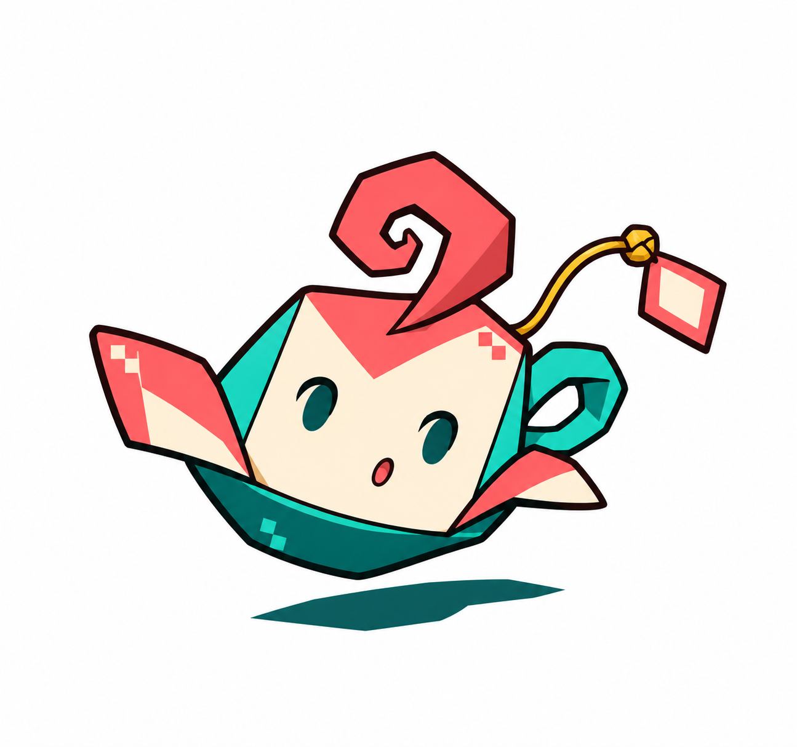
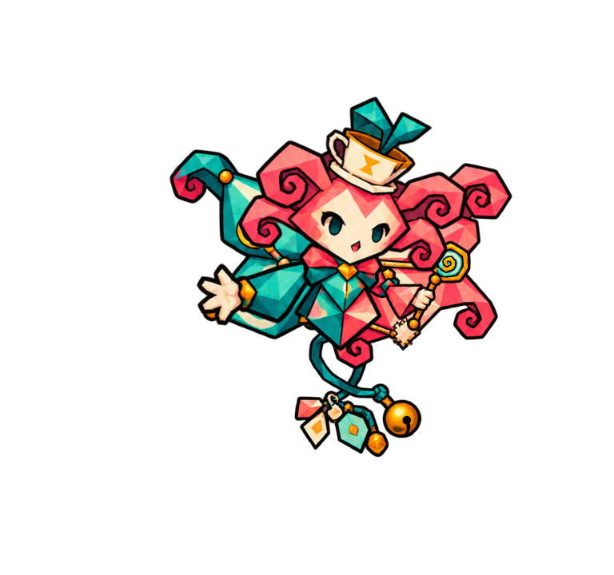
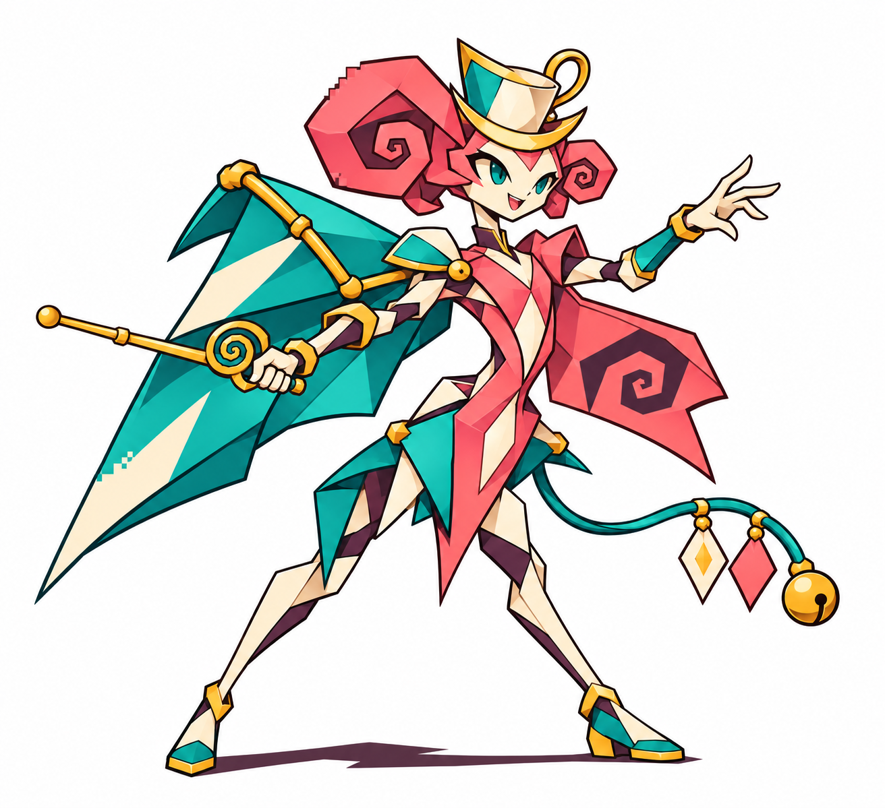
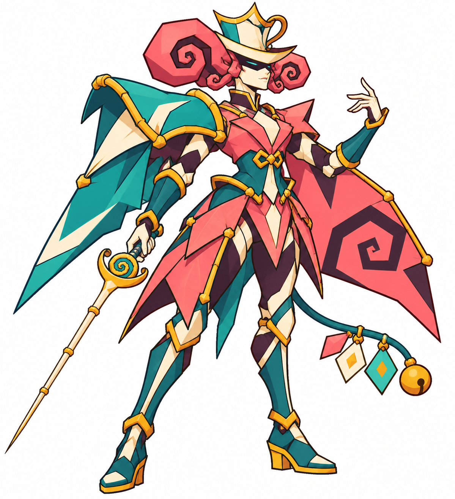

Infusim (nome proposto) · Bebê
Em avaliação

Aprende a recuperar o equilíbrio entre pausas e impulsos.
Bebê e jovem em avaliação; nomes e requisitos novos propostos. Aprovação visual não equivale a integração.
Decisões · ChartEm avaliação

Aprende a recuperar o equilíbrio entre pausas e impulsos.
Aprovado visualmente

Experimenta ritmo por pausas e surpresas.
Em avaliação

Aprende a marcar o próximo gesto em vez de chegar sempre atrasada.
Aprovado visualmente

Transforma descompasso em cadência cerimonial de duelo.